<title>Navio v2 · Revisão</title>
<meta name="claude:viewport-fit-sides" content="cover">
<link rel="preconnect" href="https://fonts.googleapis.com">
<link rel="stylesheet" href="https://fonts.googleapis.com/css2?family=Montserrat:wght@500;600;700;800;900&family=Inter:wght@400;500;600&display=swap">
<style>
/* Layout: coluna de leitura com faixas de comparação lado a lado (v1 | v2) por quadro; cores da marca do canal. */
:root{
  --fundo:#f4f2ea; --superficie:#fbfaf5; --texto:#1c2342; --suave:#565d78; --linha:#d9d6c9;
  --marca:#202B57; --amarelo:#F3B544; --amarelo-texto:#8a5a00; --ok:#2f7a55; --alerta:#a3451f;
  --chip-ok:#e3f1e8; --chip-alerta:#f7e4da; --chip-pend:#f6ecd2;
  --display:'Montserrat',system-ui,sans-serif; --corpo:'Inter',system-ui,sans-serif;
}
@media (prefers-color-scheme: dark){:root:not([data-theme="light"]){
  --fundo:#141a35; --superficie:#1b2246; --texto:#eef0f7; --suave:#a8aecb; --linha:#2c3566;
  --marca:#F6F4EC; --amarelo:#F3B544; --amarelo-texto:#F3B544; --ok:#7fd1a5; --alerta:#f0a07c;
  --chip-ok:#1d3a35; --chip-alerta:#3d2622; --chip-pend:#3a3220; color-scheme:dark}}
:root[data-theme="dark"]{
  --fundo:#141a35; --superficie:#1b2246; --texto:#eef0f7; --suave:#a8aecb; --linha:#2c3566;
  --marca:#F6F4EC; --amarelo:#F3B544; --amarelo-texto:#F3B544; --ok:#7fd1a5; --alerta:#f0a07c;
  --chip-ok:#1d3a35; --chip-alerta:#3d2622; --chip-pend:#3a3220; color-scheme:dark}
body{background:var(--fundo);color:var(--texto);font:16px/1.6 var(--corpo)}
.pagina{max-width:1080px;margin:0 auto;padding-block:40px 72px;padding-left:max(16px,env(safe-area-inset-left,0px));padding-right:max(16px,env(safe-area-inset-right,0px));display:grid;gap:56px}
h1,h2,h3{font-family:var(--display);text-wrap:balance;margin:0;line-height:1.15}
h1{font-size:clamp(28px,5vw,44px);font-weight:900;color:var(--marca);letter-spacing:-.5px}
h2{font-size:clamp(21px,3vw,28px);font-weight:800;color:var(--marca)}
h3{font-size:18px;font-weight:700}
p{margin:0;max-width:68ch}
.rotulo{font:700 12px/1 var(--display);letter-spacing:.12em;text-transform:uppercase;color:var(--amarelo-texto)}
header{display:grid;gap:14px}
.estado{display:flex;flex-wrap:wrap;gap:8px}
.chip{font:600 13px/1 var(--display);padding:7px 11px;border-radius:999px;background:var(--chip-pend)}
.chip.ok{background:var(--chip-ok);color:var(--ok)} .chip.alerta{background:var(--chip-alerta);color:var(--alerta)}
section{display:grid;gap:22px}
.quadro{display:grid;gap:14px;padding-top:22px;border-top:1px solid var(--linha)}
.quadro .cab{display:flex;flex-wrap:wrap;gap:6px 16px;align-items:baseline}
.quadro .num{font:900 15px/1 var(--display);color:var(--amarelo-texto)}
.par{display:grid;grid-template-columns:minmax(0,1fr) minmax(0,1.35fr);gap:14px;align-items:start}
figure{margin:0;display:grid;gap:8px;min-width:0}
figure img{width:100%;max-width:100%;aspect-ratio:9/16;object-fit:cover;border-radius:10px;display:block;background:var(--linha)}
figure.v2 img{box-shadow:0 0 0 3px var(--amarelo)}
figcaption{font:600 13px/1.3 var(--display);color:var(--suave)}
figure.v2 figcaption{color:var(--amarelo-texto)}
.nota{font-size:15px;color:var(--suave)}
.grade{display:grid;grid-template-columns:repeat(auto-fit,minmax(min(100%,300px),1fr));gap:12px}
.item{background:var(--superficie);border:1px solid var(--linha);border-radius:10px;padding:16px;display:grid;gap:8px;align-content:start;min-width:0}
.item .linha-cab{display:flex;justify-content:space-between;gap:10px;align-items:center}
.tabela{overflow-x:auto} table{border-collapse:collapse;width:100%;font-size:14.5px;font-variant-numeric:tabular-nums}
th,td{text-align:left;padding:9px 10px;border-bottom:1px solid var(--linha);vertical-align:top}
th{font:700 12px/1.2 var(--display);letter-spacing:.06em;text-transform:uppercase;color:var(--suave)}
.destaque{background:var(--marca);color:var(--fundo);border-radius:14px;padding:24px;display:grid;gap:14px}
.destaque h2{color:var(--fundo)} .destaque p,.destaque li{color:var(--fundo)}
.destaque ol{margin:0;padding-left:1.2em;display:grid;gap:8px}
.assinatura{display:grid;grid-template-columns:minmax(0,260px) minmax(0,1fr);gap:20px;align-items:center}
code{font-size:.9em;background:var(--superficie);border:1px solid var(--linha);padding:1px 5px;border-radius:5px}
@media (max-width:620px){.par{grid-template-columns:1fr 1fr}.assinatura{grid-template-columns:1fr}}
</style>

<main class="pagina">
  <header>
    <span class="rotulo">De Olho no Invisível · Episódio 01 · reformulação</span>
    <h1>Como um navio de aço consegue flutuar?</h1>
    <p>Etapas A (auditoria) e B (nova direção visual e teste de voz). Os cinco quadros abaixo saíram do motor que fará o episódio, Blender 5.1 com Cycles, em 1080×1920, sem retoque. À esquerda de cada um está o quadro equivalente da versão rejeitada.</p>
    <div class="estado">
      <span class="chip ok">Composição final v3c</span>
      <span class="chip ok">Ajustes v3b</span>
      <span class="chip ok">Motor v2 + benchmark</span>
      <span class="chip alerta">Voz: plano gratuito bloqueado pela ElevenLabs</span>
      <span class="chip ok">Revisão v3: quadros 2, 3 e 4</span>
      <span class="chip ok">Protótipo do mascote</span>
      <span class="chip ok">Benchmark dos motores</span>
      <span class="chip ok">5 quadros renderizados</span>
      <span class="chip ok">Assinatura com o mascote oficial</span>
      <span class="chip">Voz Will - Deep: pendente</span>
      <span class="chip">Referência analisada por quadros estáticos</span>
      <span class="chip">Aguardando sua aprovação</span>
    </div>
  </header>

  <section aria-labelledby="t-c2">
    <span class="rotulo">Entrega mais recente · revisão final de composição (Three.js v2)</span>
    <h2 id="t-c2">Quadros 2, 3 e 4 corrigidos</h2>
    <div class="grade">
      <figure class="v2">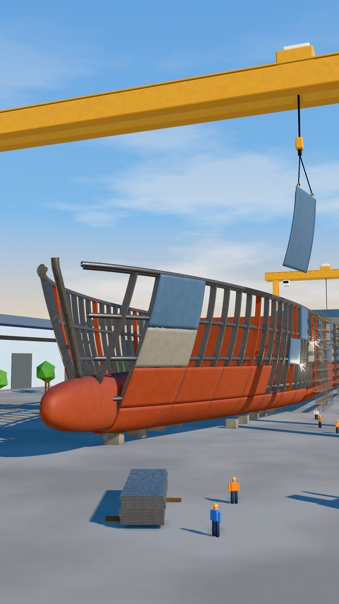<figcaption>Quadro 2 · estaleiro</figcaption></figure>
      <figure class="v2">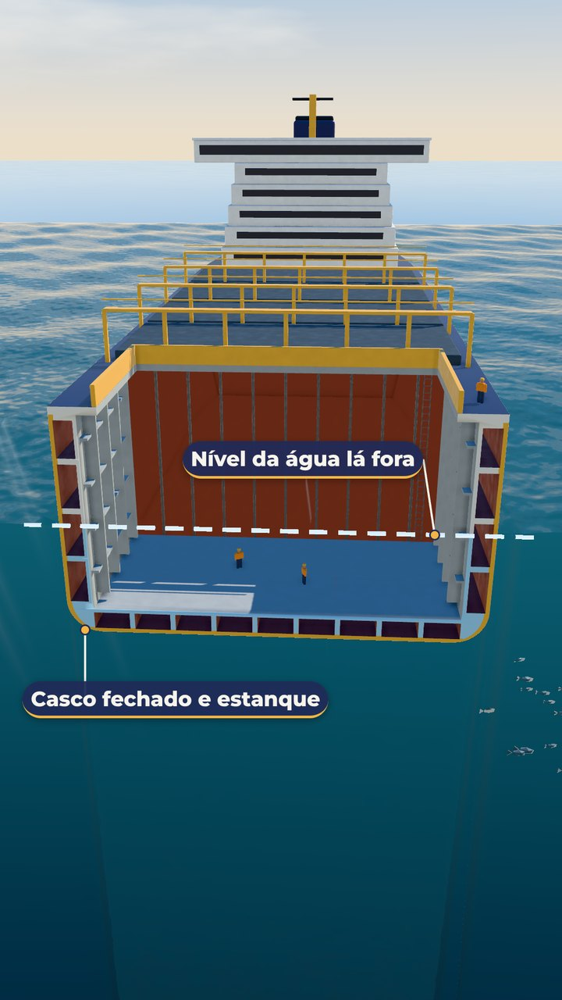<figcaption>Quadro 3 · interior do casco</figcaption></figure>
      <figure class="v2">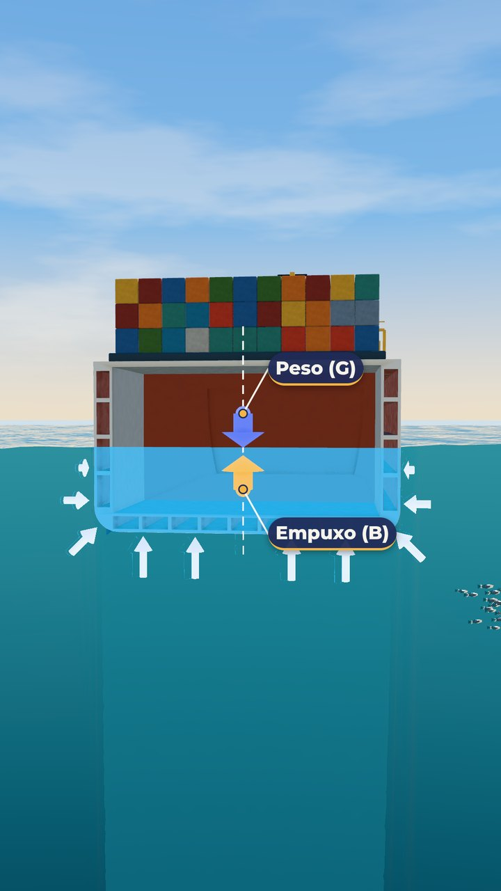<figcaption>Quadro 4 · empuxo</figcaption></figure>
    </div>
    <p class="nota"><strong>Quadro 2:</strong> câmera mais próxima, pórtico mais baixo (menos céu), bulbo alongado no lugar da esfera, lingas que saem do gancho e terminam em olhais soldados no painel, com o gancho sobre o centro de massa da peça. <strong>Quadro 3:</strong> tracejado e rótulo "Nível da água lá fora"; chapeamento externo destacado como contorno contínuo, com o rótulo "Casco fechado e estanque"; mar profundo, sem leito. <strong>Quadro 4:</strong> 10 setas de pressão (antes 18), ainda nos três regimes; peso aplicado em G e empuxo em B, iguais, opostos e na mesma linha vertical; sem leito.</p>
    <p class="nota"><strong>Voz:</strong> a tentativa única foi feita com o saldo confirmado (0 de 10.000 usados). A ElevenLabs recusou: desativou o acesso gratuito da conta por "atividade incomum", provavelmente por causa do proxy desta sessão. Nada foi cobrado e não fiz novas tentativas.</p>
  </section>

  <section aria-labelledby="t-c1">
    <span class="rotulo">Entrega anterior · ajustes v3b, motor v2, benchmark e voz</span>
    <h2 id="t-c1">Quadros 3 e 4 corrigidos</h2>
    <div class="par">
      <figure class="v2">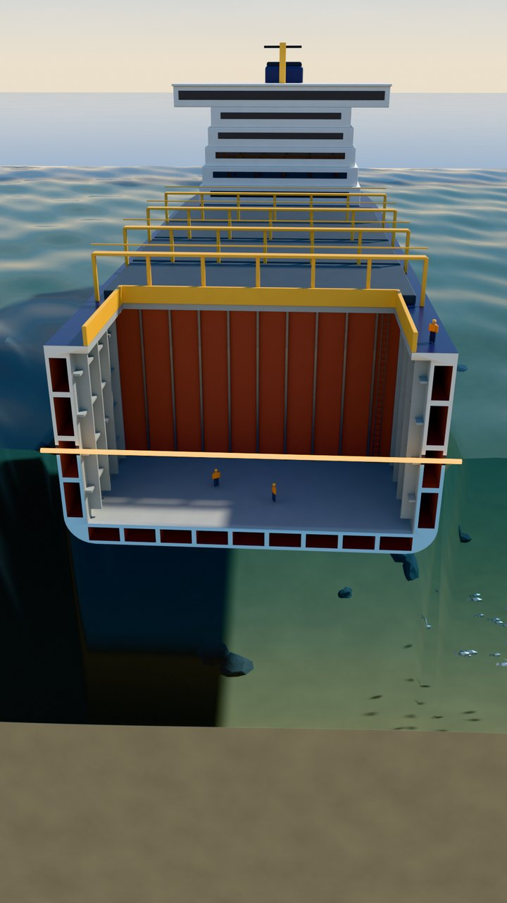<figcaption>Quadro 3 · sem contêineres no convés</figcaption></figure>
      <figure class="v2">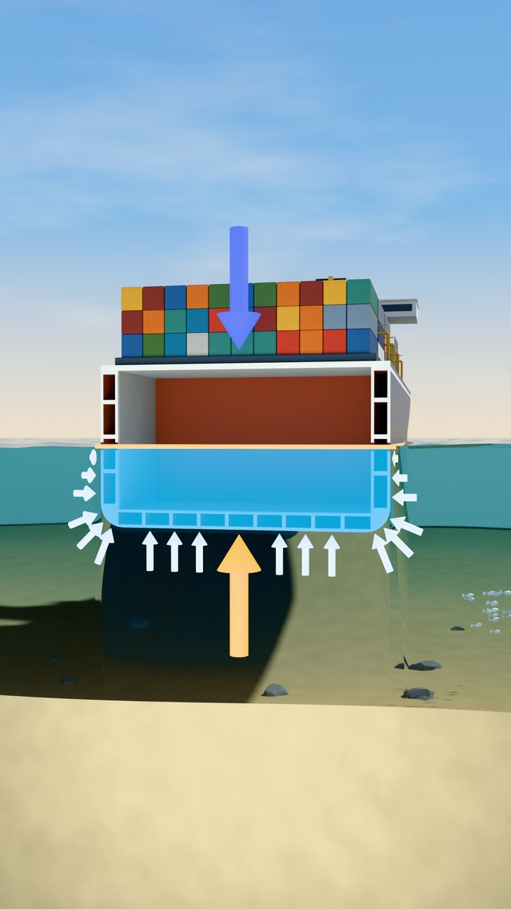<figcaption>Quadro 4 · pressão por regime</figcaption></figure>
    </div>
    <p class="nota">Quadro 4, verificação numérica na seção real: a soma horizontal das pressões dá 0, e a vertical dá 285,098 ρg por metro, igual à área submersa (diferença de 0,000%). As setas agora mostram os três regimes: costado vertical (horizontais, crescendo com a profundidade), bojo curvo (a direção gira com a curva) e fundo plano (verticais e iguais). O Quadro 2 continua o PNG v3 apresentado abaixo.</p>

    <h2>Cycles × tempo real v2</h2>
    <p>Mesma cena, câmera e luz. O motor v2 reproduz os materiais do Blender, tem céu com nuvens, rebatimento simulado, sombras ajustadas e água com espessura real (absorção, refração e Fresnel).</p>
    <figure>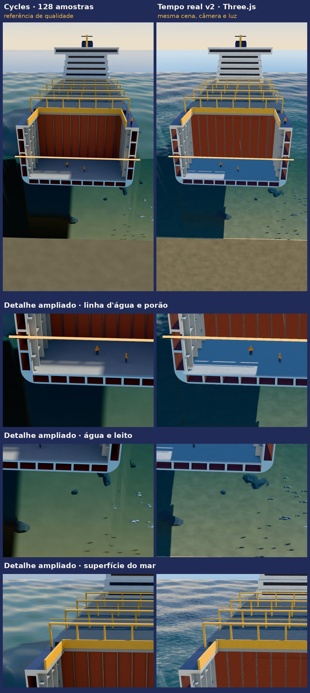<figcaption>Quadro 3 (água): inteiro e três detalhes ampliados</figcaption></figure>
    <figure>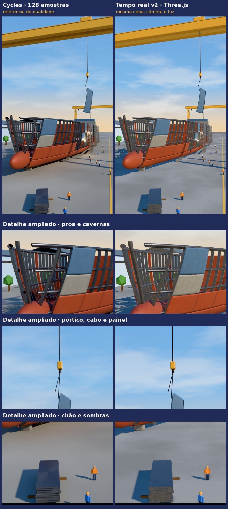<figcaption>Quadro 2 (estaleiro): inteiro e três detalhes ampliados</figcaption></figure>
    <p class="nota">Ainda diferentes: a luz rebatida colorida (no tempo real, as sombras ficam mais azuladas), o mar mais azul e com marolas mais finas, e o aço um pouco granulado de perto.</p>
    <div class="tabela"><table>
      <thead><tr><th>Configuração (nesta máquina, sem GPU)</th><th>Por quadro</th><th>SSIM</th><th>Episódio de 93 s</th></tr></thead>
      <tbody>
        <tr><td><strong>Tempo real v2 recomendado</strong> (cache de sombra + GTAO 8)</td><td>8,2–10,5 s</td><td>0,997–0,998</td><td><strong>≈ 7,3 h</strong></td></tr>
        <tr><td>Tempo real v2, qualidade máxima</td><td>9,3–10,9 s</td><td>1,000</td><td>≈ 7,8 h</td></tr>
        <tr><td>Cycles, 32 amostras (antes 128), resolução cheia</td><td>68–123 s</td><td>0,996</td><td>53–95 h</td></tr>
        <tr><td>Reduzir a resolução para 75% (qualquer motor)</td><td>−40%</td><td>0,971–0,979</td><td>perda visível, não recomendado</td></tr>
      </tbody>
    </table></div>
    <p class="nota">SSIM compara cada variante com a qualidade máxima do mesmo motor (1 = idêntico; ≥ 0,99 costuma ser imperceptível). No Cycles, cair de 128 para 32 amostras deixa o render 2,9 vezes mais rápido sem perda visível; mexer no limiar adaptativo ou nos saltos de luz não mudou nada. O grande ganho restante seria uma GPU (estimativa).</p>

    <h2>Voz Will - Deep</h2>
    <p>O conector da ElevenLabs está autenticado: plano gratuito, 0 de 10.000 créditos usados, sem cobrança extra. O nó está pronto com <code>eleven_multilingual_v2</code>, stability 0,50, similarity 0,75, style 0, speed 1,0 e o texto pedido, a um custo estimado de 204 créditos. Tentei a geração única duas vezes e, nas duas, a fila gratuita estava ocupada: nada foi gerado e nada foi cobrado. Na próxima vez que você pedir, rodo de novo.</p>
  </section>

  <section aria-labelledby="t-v3">
    <span class="rotulo">Revisão v3 · correções antes da Etapa C</span>
    <h2 id="t-v3">Quadros 2, 3 e 4 refeitos</h2>
    <p>As versões v2, à esquerda, foram preservadas. O animatic não foi iniciado.</p>

    <article class="quadro">
      <div class="cab"><span class="num">Quadro 2</span><h3>Estaleiro: silhueta naval</h3></div>
      <div class="par">
        <figure><figcaption>v2</figcaption></figure>
        <figure class="v2">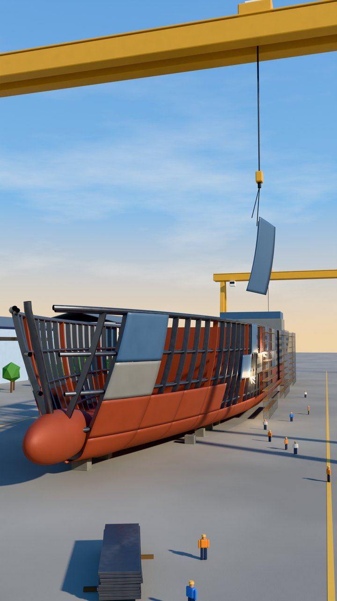<figcaption>v3</figcaption></figure>
      </div>
      <p class="nota">O casco agora é montado em blocos de chapa curva que seguem a forma real, com proa, bulbo e roda de proa já chapeados. O pórtico iça o painel exato que falta no costado, uma ação pronta para o animatic. Câmera baixa, a três quartos da proa, com operários, empilhadeira e chapas no primeiro plano.</p>
    </article>

    <article class="quadro">
      <div class="cab"><span class="num">Quadro 3</span><h3>Corte: o espaço vazio dentro do casco</h3></div>
      <div class="par">
        <figure><figcaption>v2</figcaption></figure>
        <figure class="v2">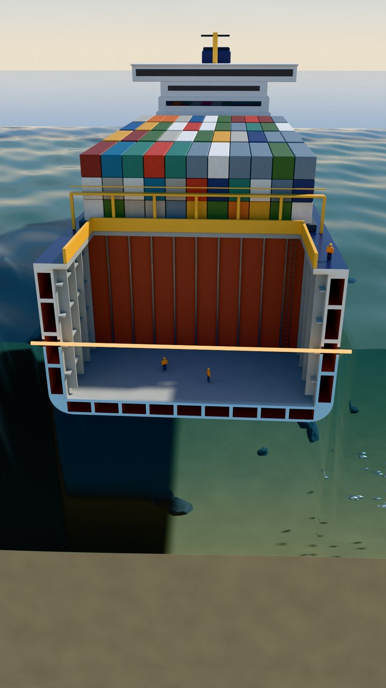<figcaption>v3</figcaption></figure>
      </div>
      <p class="nota">Porão vazio e aberto, com cavernas, longitudinais, guias e operários para dar escala. O aço aparece como uma casca fina. A linha d'água amarela atravessa a seção: o piso do porão fica cerca de 7 m abaixo do mar e, mesmo assim, o porão está seco.</p>
    </article>

    <article class="quadro">
      <div class="cab"><span class="num">Quadro 4</span><h3>Empuxo: volume deslocado, pressão e equilíbrio</h3></div>
      <div class="par">
        <figure>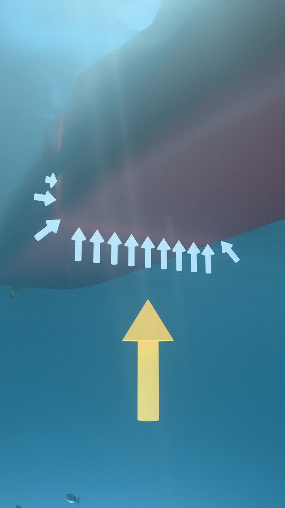<figcaption>v2</figcaption></figure>
        <figure class="v2">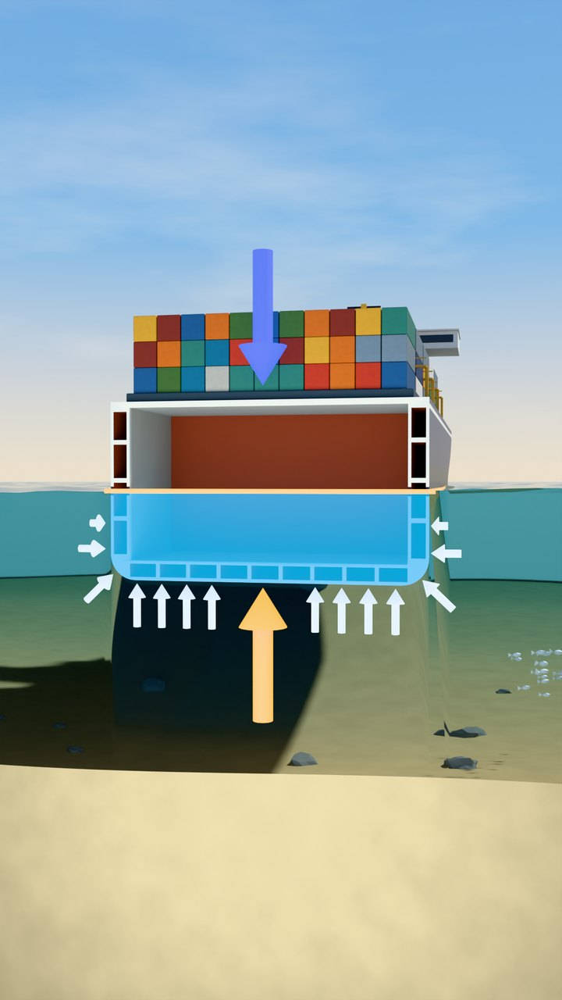<figcaption>v3</figcaption></figure>
      </div>
      <p class="nota">A área submersa da seção, em ciano, é o volume deslocado. As setas de pressão ficam perpendiculares ao casco e crescem com a profundidade: as laterais se anulam e as do fundo empurram para cima. Empuxo (amarelo) e peso (azul) têm o mesmo tamanho e estão na mesma vertical, ou seja, equilíbrio. O centro de carena foi calculado com a forma real do casco.</p>
    </article>
  </section>

  <section aria-labelledby="t-mascote">
    <h2 id="t-mascote">Protótipo 3D do mascote (suspenso a seu pedido)</h2>
    <div class="grade">
      <figure>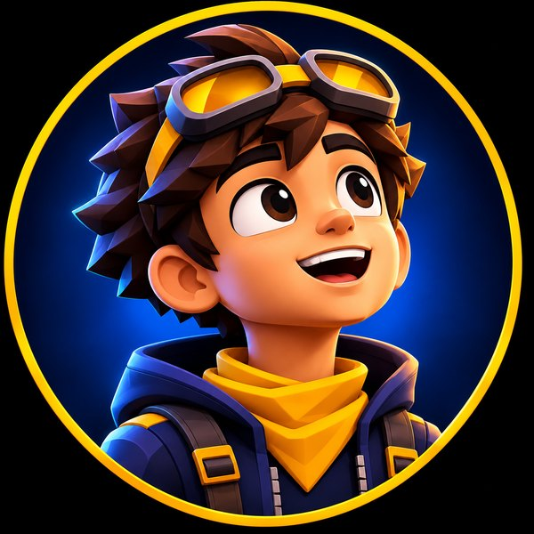<figcaption>Imagem oficial (preservada)</figcaption></figure>
      <figure class="v2">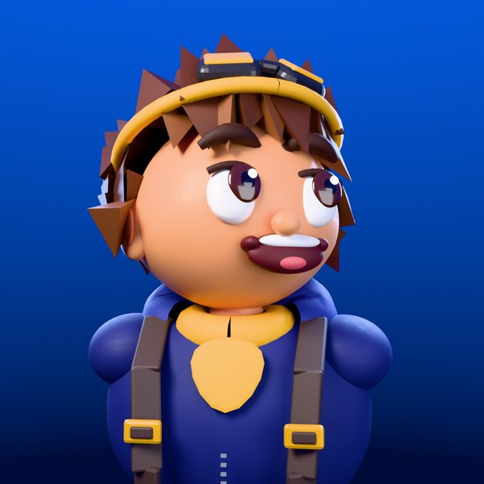<figcaption>Protótipo · três quartos</figcaption></figure>
      <figure class="v2">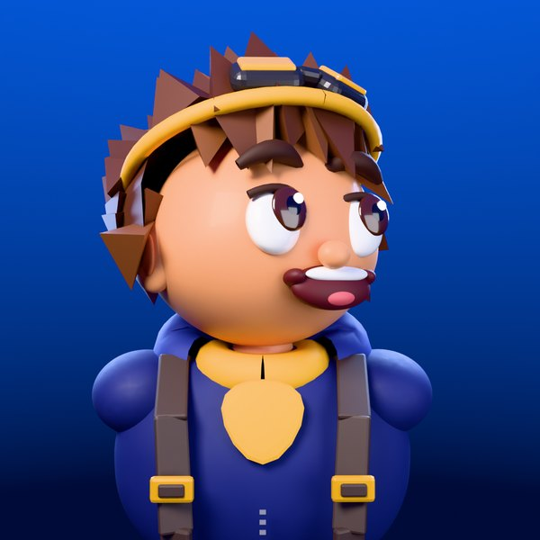<figcaption>Protótipo · frente</figcaption></figure>
      <figure class="v2">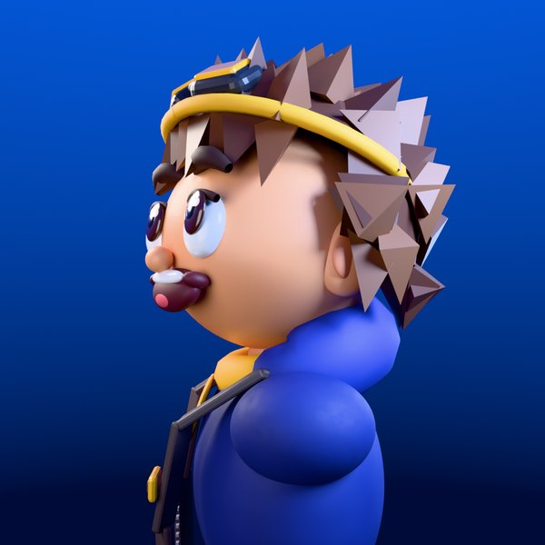<figcaption>Protótipo · perfil</figcaption></figure>
    </div>
    <p>Fiel em paleta, cabelo espetado, óculos âmbar com tira amarela, olhar para cima, sorriso aberto, capuz, lenço e alças. <strong>Ainda não é aprovável:</strong> o rosto está redondo demais, o queixo pouco definido, a franja curta, o tronco inflado, e capuz, gola e lenço precisam de forma. Recomendo escultura manual no Blender usando este protótipo como base, ou mais iterações por código, parte por parte, com você. Ele não foi colocado em nenhum quadro.</p>
  </section>

  <section aria-labelledby="t-motores">
    <h2 id="t-motores">Mesmo quadro, dois motores</h2>
    <p>Mesma geometria (117.774 triângulos), câmera, sol, céu, cores e mapeamento de tons. Mesma máquina: 4 núcleos de CPU, sem GPU, CPU ociosa.</p>
    <figure>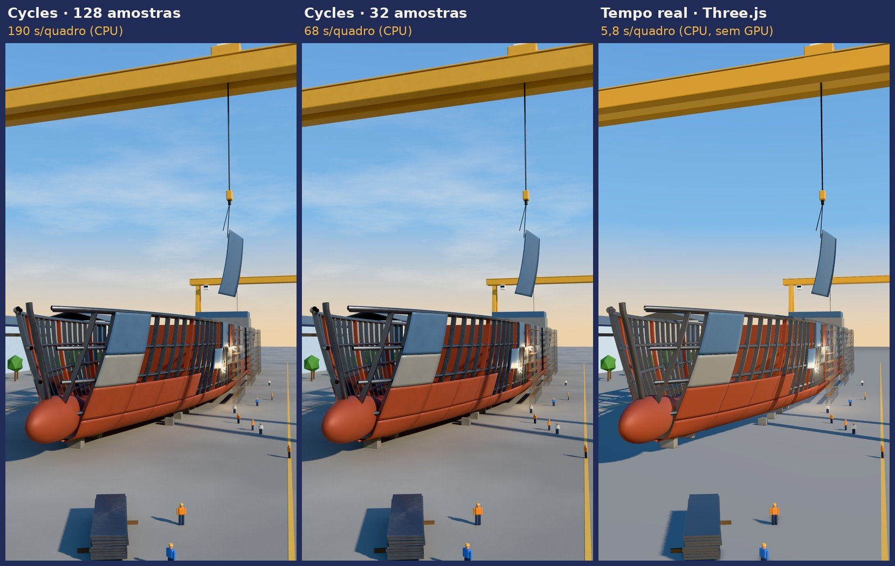<figcaption>Quadro inteiro</figcaption></figure>
    <figure>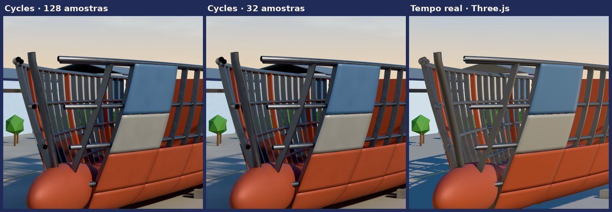<figcaption>Detalhe em tamanho real: o tempo real perde a luz rebatida, tem serrilhado nas sombras e materiais mais lisos</figcaption></figure>
    <div class="tabela"><table>
      <thead><tr><th>Configuração</th><th>Por quadro</th><th>Animatic de 12 s</th><th>Episódio de 93 s</th></tr></thead>
      <tbody>
        <tr><td>Cycles 128 amostras, 1080×1920</td><td>190 s</td><td>19 h</td><td>147 h</td></tr>
        <tr><td>Cycles 32 amostras, 1080×1920</td><td>68 s</td><td>6,8 h</td><td>53 h</td></tr>
        <tr><td>Cycles 32 amostras, prévia 540×960</td><td>18,5 s</td><td>1,9 h</td><td>14 h</td></tr>
        <tr><td><strong>Tempo real + AO, 1080×1920</strong></td><td><strong>5,8 s</strong></td><td><strong>35 min</strong></td><td><strong>4,5 h</strong></td></tr>
        <tr><td>Tempo real + AO, prévia 540×960</td><td>2,1 s</td><td>13 min</td><td>1,6 h</td></tr>
      </tbody>
    </table></div>
    <p><strong>Recomendação:</strong> tempo real (Three.js) para animar e Blender/Cycles para modelar e fazer quadros de destaque. Neste ambiente, o tempo real é 12 a 33 vezes mais rápido, e numa GPU comum seria instantâneo (estimativa). Antes do animatic, proponho um quadro de teste com o motor em tempo real refeito (materiais com relevo, água estilizada, sombras sem serrilhado, luz de rebatimento simulada) para fechar a diferença de qualidade. Alternativa: Cycles com 32 amostras num computador com GPU, cerca de 2 a 5 h por episódio (estimativa). Com 32 amostras, o Cycles ficou visualmente igual ao de 128.</p>
  </section>

  <section aria-labelledby="t-quadros">
    <h2 id="t-quadros">Quadros de referência: v1 × v2</h2>

    <article class="quadro">
      <div class="cab"><span class="num">Quadro 1</span><h3>Bloco de aço afundando</h3></div>
      <div class="par">
        <figure>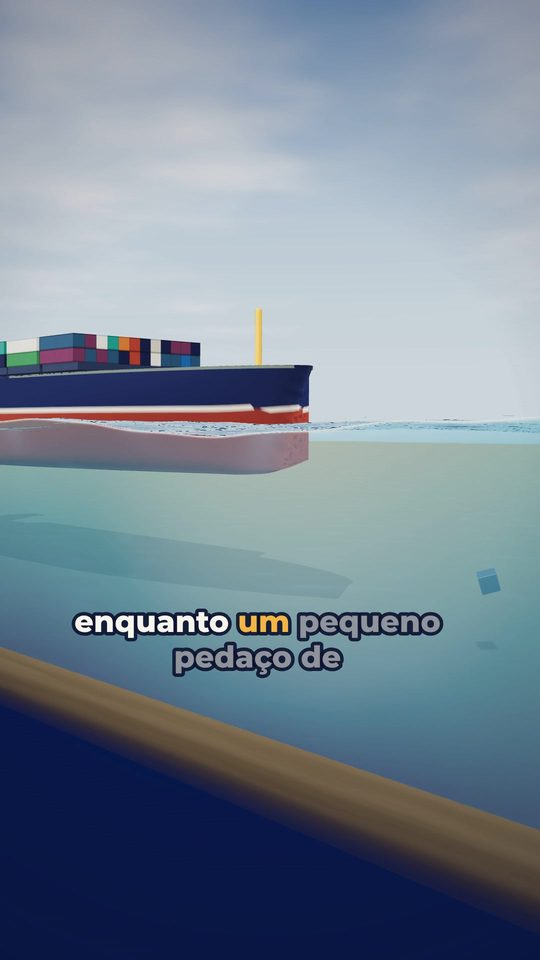<figcaption>v1 · Three.js</figcaption></figure>
        <figure class="v2">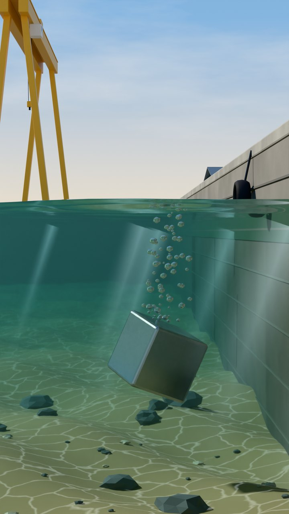<figcaption>v2 · Blender / Cycles</figcaption></figure>
      </div>
      <p class="nota">Plano meio dentro, meio fora d'água, junto ao cais do estaleiro. O bloco é aço escovado e chanfrado; há bolhas, cáusticas, raios de luz, limo no cais e o pórtico amarelo ao fundo, que anuncia a construção.</p>
    </article>

    <article class="quadro">
      <div class="cab"><span class="num">Quadro 2</span><h3>Estaleiro com o casco em construção</h3></div>
      <div class="par">
        <figure><figcaption>v1 · não existia estaleiro</figcaption></figure>
        <figure class="v2"><figcaption>v2 · Blender / Cycles</figcaption></figure>
      </div>
      <p class="nota">Popa já chapeada e proa ainda em cavernas e longarinas, sobre o duplo fundo montado. O pórtico iça um bloco de costado. Operários, chapas e blocos pré-fabricados dão escala.</p>
    </article>

    <article class="quadro">
      <div class="cab"><span class="num">Quadro 3</span><h3>Corte interno do navio</h3></div>
      <div class="par">
        <figure>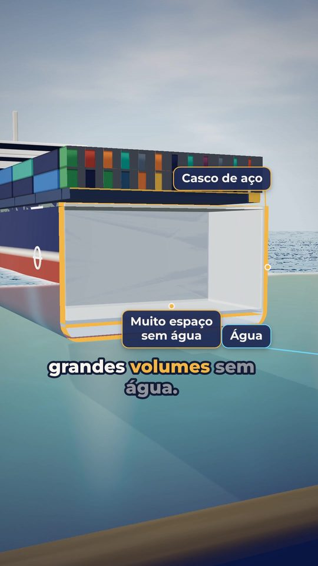<figcaption>v1 · Three.js</figcaption></figure>
        <figure class="v2"><figcaption>v2 · Blender / Cycles</figcaption></figure>
      </div>
      <p class="nota">Seção a meia-nau com duplo fundo e tanques laterais em células, porão com contêineres e antepara. Água e leito são cortados no mesmo plano. Abaixo da linha d'água a face de corte muda de tom, e o calado se lê na própria seção.</p>
    </article>

    <article class="quadro">
      <div class="cab"><span class="num">Quadro 4</span><h3>Empuxo visto debaixo d'água</h3></div>
      <div class="par">
        <figure>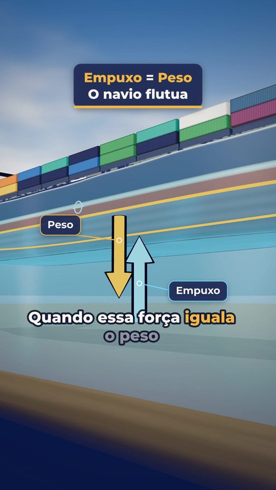<figcaption>v1 · setas 2D</figcaption></figure>
        <figure class="v2"><figcaption>v2 · setas 3D com escala física</figcaption></figure>
      </div>
      <p class="nota">Setas de pressão normais ao casco, com comprimento proporcional à profundidade (p = ρ·g·h): no costado são horizontais e se anulam, no fundo empurram para cima. A resultante amarela é o empuxo.</p>
    </article>

    <article class="quadro">
      <div class="cab"><span class="num">Quadro 5</span><h3>Guindaste colocando contêineres</h3></div>
      <div class="par">
        <figure><figcaption>v1 · contêineres caíam do céu</figcaption></figure>
        <figure class="v2"><figcaption>v2 · Blender / Cycles</figcaption></figure>
      </div>
      <p class="nota">O portêiner baixa o contêiner pelo spreader. As baías de vante ainda estão vazias, então se vê o carregamento em curso. As marcas de calado e o Plimsoll estão modelados, mas só ficam legíveis num close-up próprio (previsto para o animatic).</p>
    </article>
  </section>

  <section aria-labelledby="t-assinatura">
    <h2 id="t-assinatura">Assinatura com o mascote oficial</h2>
    <div class="assinatura">
      <figure class="v2">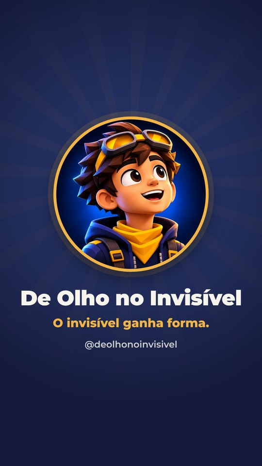<figcaption>Substitui o olho genérico da v1</figcaption></figure>
      <p>A imagem oficial entra recortada no próprio círculo, sem redesenho. Como não existe um modelo 3D fiel do personagem, ele aparece só no encerramento, como o briefing permite.</p>
    </div>
  </section>

  <section aria-labelledby="t-ref">
    <h2 id="t-ref">Referência: Desmontando o Mundo</h2>
    <p>Analisei 75 quadros públicos (25%, 50% e 75% de cada um dos 25 Shorts mais recentes, de 1,1 a 10 milhões de visualizações). Os vídeos em movimento e o vídeo de processo continuam inacessíveis, pela verificação anti-robô do Google. Por isso ritmo, câmera em movimento e narração não foram observados.</p>
    <div class="grade">
      <div class="item"><h3>Personagem no centro</h3><p class="nota">O apresentador aparece em quase todo quadro, agindo e reagindo, e muitas vezes representa o espectador ("Você", planos em ponto de vista).</p></div>
      <div class="item"><h3>Estilo brinquedo</h3><p class="nota">Low-poly facetado, cores saturadas, luz clara, sombras suaves. Mais lúdico que a nossa v2, que puxou para visualização de engenharia.</p></div>
      <div class="item"><h3>Planos variados</h3><p class="nota">Close-ups, contra-plongée, isométrico, raio-X, tela dividida e indicadores de painel. Os nossos cinco quadros são todos gerais ou médios.</p></div>
      <div class="item"><h3>Pouco texto</h3><p class="nota">Um rótulo curto por vez, setas coloridas simples e legenda de uma palavra por vez. A barragem usa setas de pressão crescendo com a profundidade, como o nosso Quadro 4.</p></div>
    </div>
    <p><strong>Processo (página pública do curso):</strong> o vídeo de processo exige login no YouTube e não foi assistido. A página do curso diz que os vídeos são feitos "usando só o Claude", com um kit pago, em seis etapas: ideia, roteiro (gancho, ritmo e fechamento), produção, refinamento, publicação e preparação. Ela não diz qual software de 3D é usado. O visual observado é compatível com render em tempo real. Se for isso, a distância entre a v1 e a referência era de direção de arte, não de motor. Proponho um quadro de teste no estilo "brinquedo" em tempo real, lado a lado com o Cycles, antes de escolher o motor.</p>
    <p><strong>Maior lacuna nossa: o personagem.</strong> Proponho fazer um modelo 3D fiel do mascote oficial e submetê-lo à sua aprovação antes de usá-lo. Também proponho subir saturação e luz, facetar mais a geometria e incluir close-ups e planos em ponto de vista, sem copiar personagem, cenários ou identidade.</p>
  </section>

  <section aria-labelledby="t-auditoria">
    <h2 id="t-auditoria">Auditoria da v1</h2>
    <div class="grade">
      <div class="item"><div class="linha-cab"><h3>Modelagem</h3><span class="chip alerta">reprovada</span></div><p class="nota">Casco liso sem bulbo, leme ou hélice; contêineres sem corrugação; cubo que não parece aço; nada que dê escala.</p></div>
      <div class="item"><div class="linha-cab"><h3>Iluminação</h3><span class="chip alerta">reprovada</span></div><p class="nota">WebGL por software sem luz indireta nem oclusão; o ACES lavou a paleta; materiais indistintos.</p></div>
      <div class="item"><div class="linha-cab"><h3>Cenários</h3><span class="chip alerta">reprovados</span></div><p class="nota">Só oceano e céu. Sem porto, estaleiro ou leito com detalhes: a história não tinha lugar.</p></div>
      <div class="item"><div class="linha-cab"><h3>Animação</h3><span class="chip">física ok · encenação não</span></div><p class="nota">Equilíbrio, calado e alagamento corretos. Mas os contêineres caem do céu, sem guindaste, e não há movimento secundário.</p></div>
      <div class="item"><div class="linha-cab"><h3>Câmera</h3><span class="chip alerta">reprovada</span></div><p class="nota">De 28,5 s a 54,5 s, cerca de 35% do vídeo, o enquadramento lateral rente à água se repete.</p></div>
      <div class="item"><div class="linha-cab"><h3>Edição e texto</h3><span class="chip alerta">reprovada</span></div><p class="nota">Até três camadas de texto ao mesmo tempo, cobrindo o casco. As setas eram adesivos 2D.</p></div>
      <div class="item"><div class="linha-cab"><h3>Narração</h3><span class="chip alerta">reprovada</span></div><p class="nota">Kokoro <code>pm_alex</code> frase a frase: entonação quebrada, perguntas sem subida, erro em "De Olho".</p></div>
      <div class="item"><div class="linha-cab"><h3>Reaproveitável</h3><span class="chip ok">mantido</span></div><p class="nota">Forma do casco e hidrostática, simulação de calado, render em segmentos, validador, legendas e mixagem a −14 LUFS.</p></div>
    </div>
  </section>

  <section aria-labelledby="t-voz">
    <h2 id="t-voz">Teste de voz: Will - Deep</h2>
    <p>Não gerei a amostra: a chave de API não foi fornecida, e não troquei por outra voz. O script <code>voz/teste_voz.py</code> está pronto. Ele gera cerca de 17 s com o trecho aprovado mais "De Olho no Invisível. O invisível ganha forma." e registra os créditos gastos.</p>
    <div class="tabela"><table>
      <thead><tr><th>Item</th><th>Valor</th></tr></thead>
      <tbody>
        <tr><td>Voz / ID</td><td>Will - Deep · <code>CstacWqMhJQlnfLPxRG4</code> (Voice Library, clone profissional da comunidade)</td></tr>
        <tr><td>Modelo</td><td><code>eleven_multilingual_v2</code> (suporta <code>pt</code>)</td></tr>
        <tr><td>Parâmetros</td><td>stability 0,50 · similarity 0,75 · style 0 · speed 1,0 · speaker boost ligado</td></tr>
        <tr><td>Custo previsto</td><td>204 caracteres de crédito (vezes o multiplicador da voz, se houver)</td></tr>
        <tr><td>Uso comercial</td><td>Plano gratuito: <strong>não</strong> (exige atribuição "elevenlabs.io"). Planos pagos: sim, para o áudio gerado durante a assinatura.</td></tr>
        <tr><td>Riscos da Voice Library</td><td>Voz pode ser bloqueada para o plano gratuito, ter multiplicador de créditos ou ser retirada pelo dono (aviso de 30 dias a 2 anos)</td></tr>
        <tr><td>Observação de direção</td><td>A página oficial descreve a voz como "narration voice for Brazilian children". Vale ouvir pensando no público do canal.</td></tr>
      </tbody>
    </table></div>
  </section>

  <section aria-labelledby="t-limites">
    <h2 id="t-limites">Limitações medidas</h2>
    <div class="tabela"><table>
      <thead><tr><th>Ponto</th><th>Medida</th><th>Consequência</th></tr></thead>
      <tbody>
        <tr><td>Render Cycles, 4 núcleos, sem GPU</td><td>3,2 a 18,6 min por quadro (média de 10,9 min)</td><td>Um episódio de 90 s (2.700 quadros) levaria cerca de 490 h aqui. Precisa de GPU.</td></tr>
        <tr><td>EEVEE por software (Mesa)</td><td>58 s numa cena trivial (Cycles: 6 s)</td><td>Sem GPU, não serve como atalho</td></tr>
        <tr><td>Animatic da Etapa C</td><td>300 a 450 quadros</td><td>Cabe aqui em qualidade de prévia</td></tr>
        <tr><td>Referência Desmontando o Mundo</td><td>Páginas e quadros públicos liberados; reprodução bloqueada (anti-robô e <code>*.googlevideo.com</code>)</td><td>Análise só por quadros estáticos</td></tr>
      </tbody>
    </table></div>
  </section>

  <section class="destaque" aria-labelledby="t-decisao">
    <h2 id="t-decisao">O que preciso de você</h2>
    <ol>
      <li>Aprovar, ou ajustar, os quadros 2, 3 e 4 da revisão final (v3c).</li>
      <li>Voz: escolher entre gerar a amostra no site, a partir do seu computador e sem proxy; contratar um plano pago (que também dá licença comercial); ou falar com o suporte da ElevenLabs.</li>
    </ol>
    <p>Não iniciei o animatic. Nada foi publicado.</p>
  </section>
</main>
